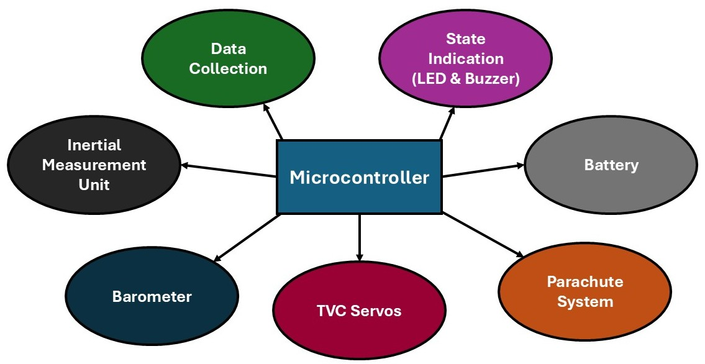

Projects
Thrust Vectored Controlled (TVC) Rocket
For my first personal engineering project, I am designing a rocket that relies on engine gimbaling for stability instead of fins. As expected, this is no easy task, but I am prepared to iterate and refine the design until I achieve success. The idea came to life during my Senior year winter break, where I decided I needed to build something. Dualing as my Senior Physics Design Project, I am hoping for a static thrust test by the end of the semester. I will continue updating this page as I make progress.
FLIGHT CONTROLLER & SOFTWARE

The core of this project involves designing a custom flight controller and its accompanying software. With no prior PCB experience, I went with a perforated circuit board approach. I’m now fully convinced I’ll never choose a perforated board again—soldering everything by hand has scarred me. The setup consists of a primary board serving as the flight controller and a secondary board dedicated to powering all systems. A 1500 mAh 7.4V battery was selected to power everything. Two step-down voltage regulators were used: one for the flight controller, and the other for all servos. All sensors (barometer, IMU, FRAM, etc.) are 3V-capable, so the Teensy is able to supply them directly. For state indication, I used a buzzer and an RGB LED to show which state the system is currently in. I’m still working on a cool startup sound—trying to top the one used in Pixhawk Autopilots, which has been a big inspiration for this project. The figure shows the finished power board and the flight computer board setup pre-solder.
PAYLOAD DESIGN

Once the flight computer was prototyped onto a circuit board, it was time to move on to CAD work. The main goal for this design was modularity—creating components that could easily connect to one another. Long structural side beams were used to tie everything together, attaching securely to each module. The circuit boards were mounted with screws, held in place by custom brackets extending from the top and bottom of each segment. The full assembly consists of three main parts: a top piece that holds the flight computer, a middle piece that supports both the bottom of the flight computer and the top of the power board, and a bottom piece that supports the bottom of the power board and serves as the battery holder. The figure shows the final, fully assembled structure.
TVC MOUNT

This design was, whole-heartedly, inspired (okay—stolen) from one of my biggest inspirations, Joe Barnard, the creator of BPS Space. His platform has been an invaluable resource since the start of this project, especially in helping me develop the flight controller and TVC mount. The specific video that helped me the most is linked here, for anyone interested in going for a TVC rocket. The gimbal mount consists of three main parts: the gimbal tube, an inner component, and an outer component. The inner part rotates the motor on one axis and actuates the gimbal tube, while the outer part allows the whole assembly to pivot relative to the inner part. The most challenging aspect of the design was working within the constraint of the rocket’s 74mm outer body tube. Fitting the entire TVC system inside that diameter takes some finesse. The final CAD design is shown on the left.